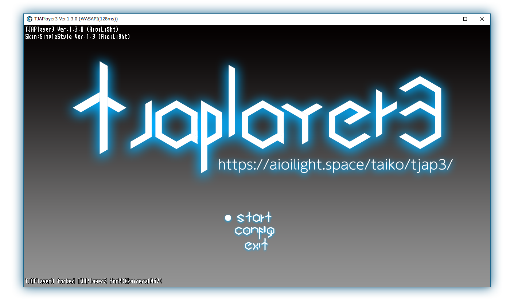

もくじ
ここでは、TJAPlayer3のダウンロードとセットアップについて解説します。
TJAPlayer3のダウンロード
ダウンロードページに移動して、圧縮ファイルを入手します。基本的に最新バージョンのファイルをダウンロードするのが無難ですが、自分が使いたいスキン(例:本家風スキン)がある場合、そのスキンが対応しているバージョンとあったものをダウンロードしてください。バージョンが合っていない場合、最悪正常に動作しませんので注意してください。
圧縮ファイルがダウンロードできたら、解凍(展開)してください。以下のようなフォルダが作成されます。
{kind=link}
Ver.1.4.0+ オプション BS1770GAINのダウンロード
BS1770GAINというプログラムをTJAPlayer3に導入することによって、自動的に音源の音量を調節し、一定の音量に調節する機能が使えるようになります。これは必ずダウンロードしなくてはいけない、というものではなく、オプションです。
sourceforge.netからBS1770GAINのダウンロードを行ってください。「Download Latest Version」ボタンをクリックすると、ダウンロードが始まります。
ファイルの解凍には、.7z形式に対応したソフトが必要になります。
解凍したら、bs1770gain-*.*.*\bin\フォルダ内にある「bs1770gain-tools」フォルダと「bs1770gain.exe」を、TJAPlayer3.exeのあるフォルダにコピーします。
{kind=link}
TJAPlayer3.exeを起動したときに、「Scanning Loudness」と表示されれば導入は成功です。
TJAPlayer3のセットアップ
TJAPlayer3のセットアップに必要なものとして、Config.iniがあります。このファイルは、TJAPlayer3の初回起動時に自動的に生成されるものです。TJAPlayer3のダウンロードが終わったら、まずはじめにこのConfig.iniを生成してもらう必要があります。
TJAPlayer3.exeを起動して、下の画面が出ることを確認してください。

{kind=link}
一度TJAPlayer3を終了してください。TJAPlayer3.exeと同じ階層に、Config.iniが生成されていると思います。このファイルを使って、このシミュレータの設定を行うことが出来ます。
主に変更を要する設定
ここで紹介されているものはごく一部で、すべての設定についてはTJAPlayer3 Config.iniで説明しています。
TJAPath
TJAPathでは、譜面ファイルを保存しているフォルダを設定することが出来ます。
デフォルト値は.\(TJAPlayer3と同じフォルダ)です。フォルダまでのパスは絶対パスまたは相対パスで指定します。
SkinPath
SkinPathでは、使用するスキンを設定することが出来ます。
特にいじっていない場合、デフォルト値はSimpleStyle\になります。外部スキンを使う場合は、書き換えてください。
FontName
FontNameでは、フォントレンダリングに使用するフォント名を設定します。
デフォルト値はMS UI Gothicです。正確なフォント名を指定しなければ表示されません。
SoundDeviceType
SoundDeviceTypeでは、使用するサウンドデバイスの種類を設定できます。
デフォルト値はWindows Vista以降のPCであれば2(WASAPI)です。